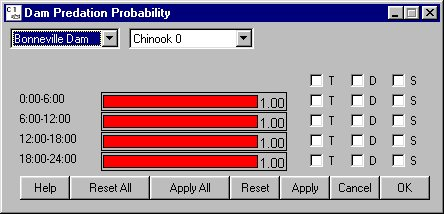

Predation Probability: Diel Predation Probability
Selecting Dam Predation Probability opens a window for adjusting the predation rate to some fraction below the maximum rate for each dam and species. Since predators typically use visual cues to find and capture prey, light levels should effect the rate of predation of fish in the forebay of the dam. Since dam passage varies between day and night, COMPASS allows for the probability of predation to change over a 24 hour period in dam time increments (6 hours). A diel variation in reservoir predation is not applied since COMPASS only uses two time steps over the day for reservoirs.
Predation Probability opens a window for adjusting the predation rate to some fraction below the maximum rate for each dam and species. Since predators typically use visual cues to find and capture prey, light levels should effect the rate of predation of fish in the forebay of the dam. Since dam passage varies between day and night, COMPASS allows for the probability of predation to change over a 24 hour period in dam time increments (6 hours). A diel variation in reservoir predation is not applied since COMPASS only uses two time steps over the day for reservoirs.
This is a Slider Input window.
This Slider Input window includes menus for selecting by Dam and by Species. You can group sliders by: Time-Step (T), Dam (D), or Species (S).
- If you group sliders by Time-Step (T), you are only modifying the grouped Time-Step values for the specific Dam and Species currently selected in the menus.
- If you group sliders by Dam (D), you are modifying the value for the corresponding Time-Step(s) for the specified Species at all dams.
- If you group sliders by Species (S), you are modifying the value for the corresponding Time-Step(s) at the specified Dam for all species.
- If you group slider by both Dam (D) and Species (S), you are modifying the value for the corresponding Time-Step(s) at all dams for all species.

Dam Predation Probability window